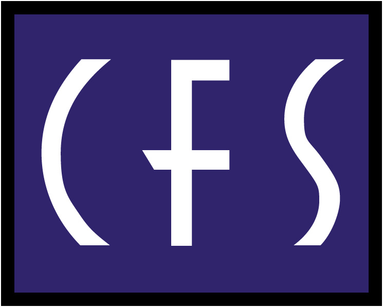

Russell Dudek

Independent candidate materials for a confidential client represented by CFSMake data coherent. Make AI consequential.
Build one trusted operating reality, then attach AI to bounded workflows with explicit ownership, authority, adoption, and evidence.
The end client is confidential. Company-specific operating assumptions are therefore hypotheses for discovery, not claims about internal facts. The public role description supports the mandate, tensions, and questions in this brief.
Actual Mandate
Turn fragmented data and uneven AI use into a trusted, governed, adopted operating capability: centralize or connect the data foundation, normalize meaning across reporting/CRM/documents, establish standards and guardrails, translate work into AI-assisted processes, coordinate vendors, and leave durable internal ownership.
Operating Tensions
| Tension | Failure on one side | Failure on the other | Leadership move |
|---|---|---|---|
| Central truth / local ownership | New central bottleneck | Persistent fragmentation | Shared definitions and governance with accountable domain owners |
| Speed / readiness | Tool theater and risk | Analysis paralysis | Bounded workflow slices with explicit readiness gaps |
| Build / change | Elegant platform, weak use | Adoption activity without capability | Engineer the data and the behavior as one operating product |
| Vendor / internal capability | Dependency and knowledge loss | Slow reinvention | Use vendors to accelerate; require internal ownership and reusable assets |
| Standards / judgment | Bureaucratic controls | Inconsistent risk decisions | Common guardrails with workflow-specific authority and escalation |
Decision Architecture
What is authoritative? Who owns meaning and quality? What can be connected, mirrored, transformed, or retired?
What role should AI play? Which human decides? What evidence, review, access, and escalation are required?
Where does the intervention enter the workflow? Who adopts it? Which outcome earns scale?
What Success Looks Like
Critical decisions use named sources, shared definitions, visible quality, and accountable stewardship.
Approved interventions are retained in workflows because they are useful, governed, supported, and measured.
Russell Dudek
FOCUS Operating Model
| Layer | Questions | Minimum output |
|---|---|---|
| F - Frame the work | What decision or workflow matters? Who owns it? What is the baseline and consequence? | Decision/workflow charter |
| O - Organize the data | Which sources, definitions, lineage, quality, access, and stewards are required? | Trusted data slice and exception map |
| C - Clarify authority | What may AI do? What must a human decide? Where are review and escalation? | Authority and guardrail contract |
| U - Use AI in workflow | What is the smallest useful intervention? How will people learn and repeat the behavior? | Embedded pilot and adoption mechanism |
| S - Scale proven patterns | What evidence warrants standardization, expansion, revision, hold, or retirement? | Portfolio decision and reusable assets |
Balanced Scorecard
| Dimension | Executive question | Illustrative signals |
|---|---|---|
| Trust | Can people find, understand, and rely on the data? | Owner/definition coverage, quality exceptions, lineage |
| Use | Does the behavior persist after launch? | Retained use, repeat behavior, champion coverage |
| Flow | Did the work become clearer or more efficient? | Cycle time, handoffs, error, rework, exception age |
| Value | Was measurable benefit realized? | Time, cost, risk, service, or growth benefit |
| Control | Are authority and exceptions visible? | Guardrail coverage, review, escalation, auditability |
| Learning | Does evidence improve the system? | Feedback-to-change time, reusable patterns, retired work |
Stakeholder Topology
Executive sponsor: sets outcome and removes cross-functional barriers. Business leaders/workflow owners: own the decision and benefit. Data/IT/security/legal: establish architecture, access, controls, and platform reliability. Users/champions: prove workability and adoption. Vendors/consultants: accelerate specialist delivery while transferring knowledge. Enablement lead: holds the integrated operating model and portfolio cadence.
Change Burden
Architecture and Enablement Posture
Centralize discovery and policy while preserving distributed ownership. Preserve raw sources, standardize and reconcile meaning, curate decision-ready products, and expose lineage, access, and exceptions.
Use common standards for access, approved tools, human authority, evaluation, and incident handling; apply them through workflow-specific contracts rather than generic policy alone.
Russell Dudek
Evidence Map
| Mandate need | Verified evidence | Transfer logic |
|---|---|---|
| Cross-system operating integration | Vape-Jet: ERP/Odoo, CRM, Jira, Slack, telemetry, production, quality, customer and engineering workflows | Current direct ownership of making fragmented signals actionable |
| AI enablement and governance | DudeWorth: readiness, value/feasibility/data/adoption frameworks; agentic patterns with human judgment and evaluation | Direct design of the mechanisms the role must institutionalize |
| Operating cadence at scale | Amazon: Prime Pittsburgh launch, visibility, standard work, escalations, approximately five million annual second-day orders | Shows execution discipline and adoption under consequence |
| Quality and high-reliability control | Compunetics: engineering, manufacturing, quality, process controls, DoD/CERN/Intel/AMD stakeholders | Shows governance as practical execution, not paperwork |
| Distributed and regulated workflows | Cardinal and ZeusVu | Shows digital modernization, field operations, and explicit safety boundaries |
Strongest Objection
Russell has not held a formal enterprise data architect title and does not claim unsupported ownership of a production Fabric estate.
Own business architecture, data meaning, priorities, governance, workflow insertion, adoption, evidence, and vendors; work hands-on within verified SQL/Python/API/ERP/CRM/AI experience; use platform specialists where depth is required.
Executive Questions
- Which data domain or workflow currently creates the most consequential executive uncertainty or operational rework?
- Where should this leader personally build, and where should the leader direct internal specialists or vendors?
- What has already been attempted with Copilot, Claude, or automation, and where did trust or adoption break?
- Which leader will own the first workflow outcome?
- Which regulatory, privacy, contractual, or model-risk constraints matter most?
- What operating behavior would make the capability undeniable at twelve months?
90-Second Interview Answer
Source Basis
Role description supplied by the candidate and public CFS posting; official CFS company and technology pages; Microsoft Fabric OneLake and medallion architecture documentation; NIST AI Risk Management Framework and Generative AI Profile. Company-specific operating ideas remain hypotheses until client discovery.